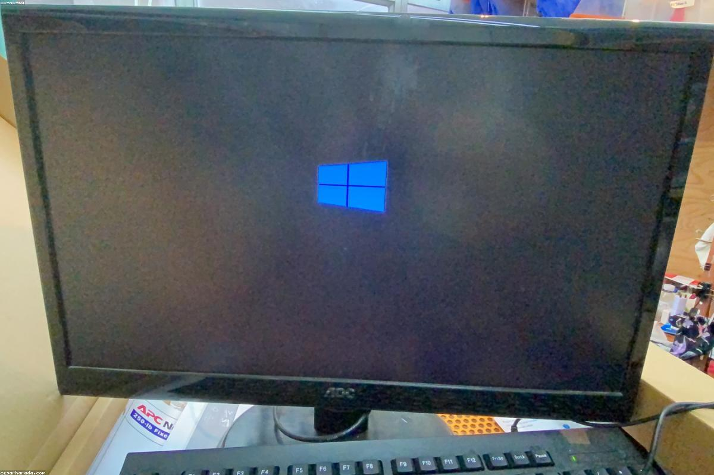

Sistemi e Reti

Sistemi e Reti è la materia che approfondisce l'infrastruttura su cui poggia tutto il mondo digitale: dalle reti locali fino a Internet, passando per la sicurezza informatica e la virtualizzazione. È anche la materia che più mi ha appassionato durante il mio percorso scolastico, perché mi ha permesso di capire concretamente come comunicano e funzionano i sistemi informatici.
Durante l'anno abbiamo affiancato la teoria a laboratori pratici di configurazione di router, switch e firewall, prima in laboratorio fisico e poi in ambiente simulato tramite Cisco Packet Tracer. Questa combinazione tra teoria e pratica ha reso l'apprendimento molto stimolante e mi ha fatto nascere il desiderio di approfondire ulteriormente questo ambito anche in futuro, soprattutto per quanto riguarda le reti e la sicurezza informatica.